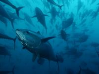

Tuna farm
Jadran tuna is fishing, farming and exporting most valued tuna species — Atlantic bluefin tuna (latin thunnus thynnus). It is an interesting fact that this tuna species can be found on Croatian 2 kuna coin, showing importance of tuna for fishing tradition in Croatia.Bluefin tuna stands out as one of rare species of warm-blooded fish, enabling her extraordinary muscle efficiency needed for fast swimming (up to 80 km/h). There is also one other thing besides being warm-blooded that makes it extraordinary swimmer: her body stands rigid during swimming, so her tail strokes can have much more effect. It's everlasting movement requires big oxygen intake, so bluefin can be found only in ecologically pure seas. Not only that tuna is a great swimmer, it is also known that they can dive up to 1 000 m deep.
{kind=link}
Typical Bluefin can usually grow to 2–2.5 m (around 350 kg) in wilderness, with average lifespan of 15 years, but can even live up to 30 years of age. Biggest Bluefin ever caught was 458 cm long, weighted 688 kg, and was captured 1979. in Canadian Sea.
It usually lives in big schools prone to long migrations. Since Adriatic Sea (as part of Mediterranean Sea) is rich in small bluefish species like pilchard and mackerel, Bluefin comes mainly for feeding.
 Our fishermen mostly catch them near Jabuka island, center of Adriatic. After locating tuna school, we catch it in the fishing net especially made for tuna fishing (called tunara). Except for modern fishing equipment, it mostly resembles traditional way of fishing tuna but with an important difference: caught tuna doesn't get killed, we move them into cages. Cages are then towed to our farm location by towboats.
Our fishermen mostly catch them near Jabuka island, center of Adriatic. After locating tuna school, we catch it in the fishing net especially made for tuna fishing (called tunara). Except for modern fishing equipment, it mostly resembles traditional way of fishing tuna but with an important difference: caught tuna doesn't get killed, we move them into cages. Cages are then towed to our farm location by towboats.